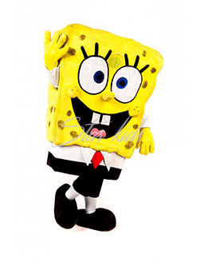
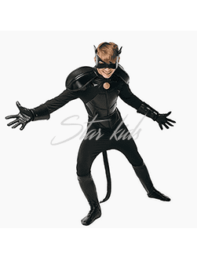
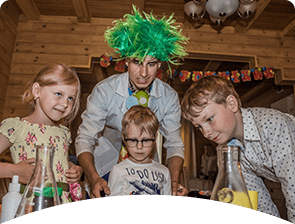
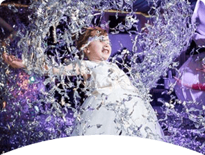
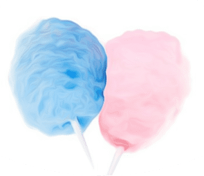

О нас
Оплата по факту
Оплата только после проведенного праздника.
Всегда вовремя
Приедем за 20 минут до начала праздника.

Индивидуальные программы
Новейшие костюмы
Более 300 костюмов
высшего качества.
Аниматоры
Капитан-Америка
Только сегодня супергерои из знаменитого отряда Мстителей готовы принять самых отважных новичков в свои ряды. Для этого юным рекрутам придется показать все, на что они способны и выложиться на все 100%! Ребят ждет множество хоть и немного сложных, но очень веселых и увлекательных заданий и конкурсов, после чего наши Мстители обязательно возьмут их в свою компанию и научат всем особенностям спасения мира от вселенского зла. И, конечно, устроят праздничную вечеринку в честь новобранцев!
Свинка Пеппа
Свинка Пеппа – это главная героиня одноименного мультсериала, который стал популярным во многих странах мира, в том числе и в России.Бесконечно уморительная, неугомонная Пеппа просто обожает вляпываться во все подряд истории и с блеском из них выходить. Ей интересно все на свете, и она готова сутки напролет играть, учиться и, конечно же, немножечко хулиганить тоже.
Гарри Поттер
Гарри Поттер – один из немногих уникальных героев, который нравится мальчикам и девочкам, малышам и подросткам.
Праздник с аниматорами Гарри Поттер и Гермиона превратится в захватывающее приключение с погоней на метлах, загадками, головоломками, приготовлением колдовского зелья, заучиванием заклинаний и завершится фееричным шабашем с плясками и песнями.Игры и конкурсы встраиваются в сценарии в зависимости от возраста детей. Также в зависимости от возраста усложняются игровые задания, загадки и квестовые вопросы.
Железный человек
Только сегодня супергерои из знаменитого отряда Мстителей готовы принять самых отважных новичков в свои ряды. Для этого юным рекрутам придется показать все, на что они способны и выложиться на все 100%! Ребят ждет множество хоть и немного сложных, но очень веселых и увлекательных заданий и конкурсов, после чего наши Мстители обязательно возьмут их в свою компанию и научат всем особенностям спасения мира от вселенского зла. И, конечно, устроят праздничную вечеринку в честь новобранцев!
Смурфики
День рождения в стиле Смурфиков принесет ребенку, его маленьким гостям и родителям яркие впечатления и позитивные эмоции. Профессиональные аниматоры сделают все, чтобы торжество прошло на высшем уровне. Они продумают все до мелочей – оформят зал в синих тонах шариками, гирляндами и изображениями веселых мультяшных героев, подберут соответствующие «смурфи-песенки», необходимый реквизит и реалистичные костюмы.
Моана
Морское путешествие можно организовать прямо у вас дома, в детском саду, в школе, в ресторане и на природе с прекрасным детским аниматором Моаной! Ей будут рады и девочки и мальчики, малыши и подростки! Заказать программу с аниматором Моаной и ее другом полубогом Мауи можно на любой праздник для детей. С ними весело пройдут любые тематические и игровые программы, вечеринки, дискотеки для детей, квесты, мастер-классы. У нас вы можете выбрать любой подходящий сценарий для организации детского праздника с аниматором для детей Моаной и аниматором Мауи. Вместе с вашими детьми аниматор Моана отправится в мистическое приключение! Конкурсы, игры, эстафеты, песни, танцы, твистинг, аквагрим – все это сделает детский праздник с аниматором Моаной веселым и запоминающимся! Даже наши стандартные недорогие программы праздника для детей с аниматором Моаной отличаются оригинальностью. Все они очень смешные и самые-самые! У нас есть еще масса дополнительных услуг для детского праздника с аниматором и без него.
My little pony
Жителей волшебной страны Эквестрии с недавних пор знают все без исключения! Обаятельные пони из мультсериала «My little pony» покорили сердца многих детей по всему миру. Трудолюбивые земные пони, управляющие погодой крылатые пегасы, профессора магии пони-единороги или совершенные аликорны – все они обладают добродушным характером и с радостью делятся зарядом позитивной энергии с окружающими!
Искорка, Радуга, Рарити или Пинки Пай – каждый из персонажей мультика обладает своей неповторимой харизмой, но самое главное для них – познать все прелести Настоящей Дружбы и доказать всем-всем-всем, что Дружба – это Чудо.
Микки Маус
Аниматоры Микки и Минни Маусы подойдут для детей любого возраста — от дошкольного до подросткового. Интересные и веселые приключения ждут маленьких гостей и виновника торжества. Аниматор, умеющий находить общий язык с ребятами, возьмет на себя все заботы по развлечению непосед.
Супермен

Аниматор Супермен на детском празднике вовлечет детей в увлекательную игру, целью которой будет очередное спасение мира или решающая битва со злом. Бравая суперкоманда выполнит целый ряд интересных заданий, чтобы помешать Мировому Злу одержать победу! Опасности и приключения будут подстерегать наших героев на каждом шагу, а в ситуации, когда помочь сможет только чудо, Супермен с радостью поделится с детьми своими суперспособностями: суперскоростью, суперзрением, суперслухом и суперсилой!
Бэтмэн
Если детям нравится Бэтмэн - мы сделаем программу и подберем реквизит так, чтобы она была им интересна. Для малышей - больше игр на пощупать, различные яркие цвета. Для 4-6 лет - активные эстафеты, бегательно- прыгательлные задание, игры на сообразительность. От 7 лет - интеллектуальные, творческие задания, активные игры на командообразование.
Сладкая Конфетка и Мистер Сиропчик
Если ваш ребёнок уже побывал на множестве детских праздников и каждый раз в кадр фотоаппарата попадал один и тот же реквизит, а хочется чего-нибудь новенького. Тогда программа "Сладкая вечеринка" придётся вам по вкусу. Именно по вкусу, поскольку на День рождения к ребёнку придут весьма необычные персонажи: Сладкая Конфетка и Мистер Сиропчик. Мы ушли от банальной анимации. И теперь вам есть чем удивить своего ребёнка и его гостей.
Что увидят дети на празднике:
- Птичку - мармеладку;
- Танцы жвачек;
- Праздничный кекс;
- Сладкий батлл
- и другое сладкое и привлекательное
В качестве альтернативы бумажной дискотеке и поролоновому шоу мы предложили детям бросание мягкими пончиками. Детский день рождения, когда позволено даже немного пошалить, понравится как малышам, так и ребятам постарше. Вместе с аниматорами наши маленькие друзья устроят настоящее конфетное шоу!
Что увидят дети на празднике:
- Птичку - мармеладку;
- Танцы жвачек;
- Праздничный кекс;
- Сладкий батлл
- и другое сладкое и привлекательное
В качестве альтернативы бумажной дискотеке и поролоновому шоу мы предложили детям бросание мягкими пончиками. Детский день рождения, когда позволено даже немного пошалить, понравится как малышам, так и ребятам постарше. Вместе с аниматорами наши маленькие друзья устроят настоящее конфетное шоу!
Маша и медведь
Озорная, хулиганистая, неугомонная и очаровательная в своей непосредственности Маша и её флегматичный и добрый друг Миша — любимые сказочные персонажи ребятишек дошкольного возраста. Малыши от 2 до 7 лет с удовольствием совершат путешествие в волшебный лес, где их ждут увлекательные приключения, веселые загадки и море веселья!
Скоморохи

Скоморохи — участники праздничных театрализованных обрядов и игр, музыканты и исполнители песен и танцев. Наши скоморохи знают множество захватывающих заданий, активных игр, веселых историй, смешных шуток, познавательных задачек, конкурсов, соревнований, песен, танцев и многого другого.
Три кота
Миу-миу-миу! Узнаете необычных гостей? Приглашайте на праздник самую озорную семейку - аниматоров в образе героев любимого мультфильма "Три кота"! Смешные и любознательные котики устроят невероятную детскую вечеринку!
Спанч Боб

Аниматор Спанч Боб на день Рождения ребенка приготовил много всего интересного и увлекательного по мотивам известного многосерийного детского мультика. В программе праздника детей ожидают удивительные фокусы, потрясающие выступления с участием мыльных пузырей невиданных размеров, цветов и форм, а также много других веселых и интересных занятий на несколько часов детского праздника.
Алладин
Открой для себя волшебный мир Востока! Грозный Султан готов отдать в жены свою дочь, прекрасную Жасмин, только если Алладин принесет волшебную лампу с Джином. Для того чтобы добыть лампу ему нужно совершить 7 подвигов, которые приведут его к цели. В одиночку Алладину это не под силу, поэтому он отправился в гости к ребятам, чтобы просить их о помощи. Вместе им предстоит отправиться в путь, чтобы помочь Жасмин и Алладину преодолеть все трудности и соединить влюбленные сердца!
Фьеки
Фьеки — это такие забавные существа пушистые-пушистые, веселые-веселые! Они бывают беленькие, как облачко, коричневые или черные, как тучка, а также разноцветные, как летняя радуга! В нашем праздничном агентстве живут несколько таких чудесных, сказочных аниматоров Фьерков, которых вы можете пригласить на день рождения к ребенку или заказать на абсолютно любой тематический праздник с аниматором в Москве и в области. Всем, кому не сидится на месте, аниматор Фьек уже приготовил потрясающие шоу для подростков, программы мастер-классов, стильные квесты, детские вечеринки и массу всевозможных развлечений. С милым, пушистым обаятельным аниматором Фьек даже дома или в детском саду, на выпускном вечере в школе или детском празднике в ресторане и в кафе дети проведут незабываемый праздник.
Мейбл и Диппер
Ребята встретятся с Мейбл и Диппером, которые любопытны и непоседливы. С аниматором Мейбл дети попадут в особенный, маленький мир со своими правилами, героями и происшествиями, перенесутся из Москвы в удивительный Гравити Фолз. И, конечно, храбрость их будет вознаграждена — в конце программы им достанутся приятные сюрпризы!
Hello Kitty
Профессиональный аниматор Hello Kitty для детей. Знаменитый добрый мультсериал о милой белой кошечке, которая приносит удачу, завоёвывает сердца малышей и даже взрослых. Мы создали несколько увлекательных интерактивных сценариев, которые станут главным событием на мероприятии и вызовут искренние улыбки на лицах ребят. С нашими аниматорами Hello Kitty весело и интересно играть, легко подружиться и узнать много познавательного.
Русалочка
Обитатели бескрайнего подводного мира всеми любимые краб Себастьян и русалочка Ариэль проведут ребятам увлекательную экскурсию по их царству. Именинник и его друзья заглянут внутрь затонувших кораблей, познакомятся с веселыми пиявками, будут спасаться от кровожадных акул и может быть даже смогут отыскать настоящую жемчужину! Однако даже в подводном царстве есть свои злодеи, с которыми придется повстречаться ребятам в этом необычном путешествии.
Буба

В мире с каждым днем создается все больше и больше мультфильмов, рисуются новые персонажи, наделяются способностями, характером,талантом. Дети любят добрых и любознательных персонажей. Ни кто не знает как в море мультфильма появился персонаж Буба, но этого мульти героя любят достаточно много детей и взрослых.
Пушистый добрый герой открывает свое сердце для нас зрителей и для новых приключений в нашем обычном мире. В мире с обыденными предметами и ситуациями.
Аниматор Буба- пушистый домовенок, устроит веселье на детском празднике в Москве и Московской области. Забавные интерактивы с аниматорским реквизитом, музыкальным сопровождением, аквагримом и фигурками из шаров для каждого ребенка. Буба станет веселым гостем на детском празднике и не позволит никому скучать.
Аниматор Буба- пушистый домовенок, устроит веселье на детском празднике в Москве и Московской области. Забавные интерактивы с аниматорским реквизитом, музыкальным сопровождением, аквагримом и фигурками из шаров для каждого ребенка. Буба станет веселым гостем на детском празднике и не позволит никому скучать.
Дракула
Случилось по-настоящему историческое событие — двери знаменитого отеля Трансильвания открыты для всех гостей! Граф Дракула организовал прием специально по случаю дня рождения нашего именинника (именинницы)! Ребята попадут в его удивительные залы, где непременно научатся летать, как летучие мышки, освоят все необходимые навыки настоящих вампирчиков, перевоплотятся в монстров, испробуют вампирскую магию друг на друге и просто чудовищно повеселятся!
Робокар Поли
Настоящий герой, ежедневно спасающий жизни, Робокар Поли прибыл к Вам на праздник, чтобы провести имениннику и его друзьям экспресс-курс Правил Дорожного Движения и научить их правильно действовать в экстренных ситуациях. В легкой игровой форме, опираясь на примеры из мультфильма, Поли расскажет ребятам, как следует вести себя на улицах города, чтобы всегда быть в безопасности! Эта познавательная программа не только интересна, но и жизненно необходима каждому ребенку! Эта программа — прекрасный пример того, как развлечение становится учением и наоборот.
Лунтик
Лунтик - еще малыш, он очень любит узнавать как устроен мир. Всем гостям и имениннику вместе с лунной пчелкой предстоит узнать, что такое дружба и радость, как можно весело проводить время в дружной компании, что такое отзвычивость и доброта, а также малышей ждет интересная активная программа с играми и танцами! Самый лучший подарок для ребенка - возможность ощутить настоящее волшебство и сказку! Приглашайте на детский день рождения аниматора в образе Лунтика - милого и симпатичного героя детского мультфильма "Лунтик и его друзья". Именно Лунтик сделает праздник ярким, необычным и красочным!
Феи и Принцессы
Этих очаровательных сказочных красавиц обожают все маленькие девочки, ведь они не только самые настоящие феи и принцессы из любимых сказок, но еще и очень добрые подружки, которые легко превратят обычный День Рождения в самый волшебный и незабываемый праздник на свете! Малышей и малышек ждут множество озорных заданий, игр и приключений, яркие красочные костюмы приведут в восторг, а обаяние наших прекрасных героинь никого не оставит равнодушным!
Смешарики
Эта праздничная программа по мотивам популярного мультфильма не только порадует своих фанатов забавными развлечениями, но и расскажет о ценности добра и уважения. Любимые герои увлекут ребят в сказочный мир Смешариков и даже помогут им ненадолго перевоплотиться в своих кумиров. Крош и Нюша и Совунья расскажут массу интересных познавательных фактов и дадут возможность детям проявить свои таланты и способности. Персонажи приготовили для юных гостей как активные подвижные игры, так и спокойные викторины и творческие задания!
Монстр Хай
Монстр Хай — это школа для настоящих Монстров, но при этом очень добрых и очаровательных. Отличницы Фрэнки Штейн и Клодин Вульф докажут любому, что монстров не нужно боятся, с ними можно весело проводить время! Ваши детки наверняка захотят учиться именно в такой школе. Ужасно интересные викторины, кошмарно стильные конкурсы, безудержные танцы и веселье — именно такими будут вступительные экзамены в школу Монстр Хай!
Харли и Джокер
Праздник для ребят которые любят не стандартных супер героев! Аниматоры Харли Квинн и Джокер восхищают своей харизмой и безупречным стилем. Дети смогут поучаствовать в самых безумных и сомнительных развлечениях эти героев.
Золушка
С нашей Золушкой вы сможете отправиться в сказочное путешествие , а так же на королевский бал для принцесс. Получите задания от феи крестной. Пройдёте посвящение в принцессы, займётесь поиском хрустальной туфельки.
В добавок ко всему этому фея- крестная покажет волшебство мыльных пузырей, а так же аквагрим с фигурками из шариков для моделирования!
В добавок ко всему этому фея- крестная покажет волшебство мыльных пузырей, а так же аквагрим с фигурками из шариков для моделирования!
Женщина Кошка

Женщина Кошка на детский праздник появится внезапно, и обязательно вызовет бурю восторга своей восхитительной программой. Детки, вместе с полюбившейся героиней, подготовят костюмы, и отправятся бороться со злом, уничтожающим всех беспомощных существ планеты. Выигрывая в конкурсах и достигая побед в эстафетах, они позволят Женщине Кошке обрести большую силу и гибкость для того, чтобы вскарабкаться на самое высокое дерево планеты и спасти крошечного голубя. Но для того чтобы выполнить главную миссию, потребуется приложить немалое количество усилий и добыть фигурки из шариков
Дедпул
DEADPOOL НА ДЕТСКОМ ПРАЗДНИКЕ – ЭТО БОМБА, НАЧИНЕННАЯ ВЕСЕЛЬЕМ, ЮМОРОМ И ХОРОШИМ НАСТРОЕНИЕМ
Аниматор в образе этого никогда не унывающего и креативно мыслящего супербойца – настоящий сюрприз для любого современного ребенка. Своим присутствием наш герой сделает любое торжественное событие особенным, ярким и по-настоящему оригинальным.
Безумный Шляпник
На праздник к ребятам придут герои сказки во главе с Безумным Шляпником. Действительно, а как тут не сойти ума? Ведь в их любимой стране злая Красная Королева украла у всех обитателей Время! И теперь в Стране Чудес всегда время-пить-чай. Нашим добрым героям очень нужна помощь ребят, ведь Алиса стала уже совсем большой и взрослой, а без настоящего детского воображения невозможно попасть в Страну Чудес. Теперь герои сказки ищут новых друзей для того, чтобы всем вместе выбраться из этой путаницы, и заодно как следует повеселиться!
Принцесса София
Принцесса София Прекрасная передаёт привет всем ребятам и приглашает в гости в страну "Волшебния"!
София - добрая девочка, которая по счастливой случайности становится принцессой! Уверены - многие дети мечтают о такой сказке. Аниматор принцесса София вместе с ребятами отправится в путешествие по волшебной стране: гости побывают в королевской академии, научатся самым добрым манерам, поиграют в весёлые, подвижные игры и конечно, им будут встречаться трудности и препятствия, которые нужно преодолеть вместе: летающий дракон Авалор и лошади, вот это да!
После успешных побед ребят ждёт королевский бал со всеми почестями!
Принцесса София
Принцесса София Прекрасная передаёт привет всем ребятам и приглашает в гости в страну "Волшебния"!
София - добрая девочка, которая по счастливой случайности становится принцессой! Уверены - многие дети мечтают о такой сказке. Аниматор принцесса София вместе с ребятами отправится в путешествие по волшебной стране: гости побывают в королевской академии, научатся самым добрым манерам, поиграют в весёлые, подвижные игры и конечно, им будут встречаться трудности и препятствия, которые нужно преодолеть вместе: летающий дракон Авалор и лошади, вот это да!
После успешных побед ребят ждёт королевский бал со всеми почестями!
Тор
Тор– желанный гость на любом мальчишеском мероприятии, ведь он – это:фантастический супергерой со сверхсилой и волшебным молотом, крушащим чудовищ; мифический бог грома из небесного Асгарда, знающий много интересных легенд;
эталон мужественного и благородного воина. Наш аниматор имеет 100-процентную схожесть со своим персонажем. У него такие же белые длинные волосы, авторский костюм (точная копия оригинала из фильма «Мстители») и огромный молот. Многие детишки принимают его за настоящего аса, поэтому ваш именинник и его друзья будут счастливы с ним пообщаться, поиграть и сфотографироваться на память.
Фиксики
А кто такие Фиксики, больше не секрет. Всё потому, что это теперь совсем не маленькие человечки, а веселые и мега зажигательные герои – аниматоры. Любимые герои фиксики – очень трудолюбивые и всегда готовы помочь перечинить всю технику в доме, если она вдруг хочет сломаться. Наши герои Симка и Нолик починят любой праздник и сделают его самым весёлым и познавательным для ребят любого возраста. Наши аниматоры – Фиксики привезут на детский праздник, День Рождения вашего ребенка, энергию, отличное настроение и массу веселых конкурсов!
Щенячий Патруль

Команда щенков-спасателей покорила всех детей. Аниматоры «Щенячий патруль» на детском празднике никого не оставят равнодушными, в ходе празднования каждый ребенок сможет почувствовать себя настоящим героем, принимая участие в занимательных квестах и спасательных операциях. Наша команда профессиональных артистов сделает любое событие для вашего малыша совершенно особенным и незабываемым. Артисты имеют навыки работы с детьми, могут заинтересовать и вовлечь в игру каждого, даже самого застенчивого гостя.
Джек Воробей

Как-то раз Джек Воробей отправился на своей «Черной Жемчужине» в очередное полное опасностей путешествие. На одном из островов он познакомился с харизматичной пираткой Сэмми, и с этих самых пор уже не разлучался с ней, так как вместе они были непобедимы, и множество славных подвигов предстояло совершить им вместе…
Наши чудесные пираты могут прийти к вашим деткам и превратить городскую квартиру, садик или кафе в судно пиратского корабля, а может быть, в заброшенный таинственный остров с сокровищами, где мифическая птица Феникс повсюду спрятала свои вопросы, а карта сокровищ такая сложная и такая интересная…
Наши чудесные пираты могут прийти к вашим деткам и превратить городскую квартиру, садик или кафе в судно пиратского корабля, а может быть, в заброшенный таинственный остров с сокровищами, где мифическая птица Феникс повсюду спрятала свои вопросы, а карта сокровищ такая сложная и такая интересная…
Клоун
Клоун — идеальный вариант и для мальчиков, и для девочек, и для малышей, и для ребят постарше. Клоуны — самые любимые, самые известные и самые-самые смешные.Дети с малых лет любят цирк, любят смотреть представления и дома играть с куклами в цирк, показывая маме смешные номера. Им нравятся разноцветные парики, забавные клоунские носики, яркие костюмы и необычная манера поведения. Поэтому Клоуны — это классика проведения торжества.
Зверополис
Чудесный и волшебный Зверополис приглашает всех детей в гости! Именно сегодня мы попадаем в мир, где хищники и травоядные не охотятся друг на друга, а живут рядом. Мы познакомимся с особыми правилами этого города, например, что кроликам не стоит есть морковку, высаженную для красоты, а леопардам разрешается скупать все пончики в магазинах. Путешествуя от района к району, мы изучим традиции каждого вида и научимся на их примере, что значит настоящая дружба.
Ниндзяго
Человечки ниндзяго набирают новобранцев в свою армию. Все дело в том, что на земли ниндзяго все чаще нападают враги, и своими силами человечкам уже не справиться. Поэтому сегодня на детском празднике Кай и Ллойд отберут в свою команду самых смелых, сильных и отважных ребят.
Молния МакКвин
Для тех, кто с юных лет прекрасно чувствует себя за рулем и любит скорость, лучшим подарком будет встреча со знаменитыми тачками из любимого мультфильма — Молнией МакКвин и Салли. Они в игровой форме научат именинника и его друзей правилам дорожного движения и превратят каждого из них в маленькую, но очень быструю и крутую тачку, после чего устроят гонки века. Драйв и веселье обеспечены!
Миньоны
Кто из детей не любит смешных, суетливых и очень забавных желтых существ — миньонов?! Эти герои мультфильма «Гадкий Я» прочно отвоевали место в сердцах миллионов людей разных возрастов. Если Ваш малыш, также является поклонником этих желтых и очаровательных чудиков, то мы предлагаем Вам пригласить одного из Миньонов на ваш детский праздник! Эти яркие иностранные персонажи появятся на дне рождения вашего ребенка в любой точке и помогут поверить в чудо. Миньоны по заданию Грю завербуют ребят в настоящих шпионов, а также поделятся с ними всеми секретами и тонкостями этого непростого дела. Но сначала имениннику и его гостям предстоит заглянуть в секретную лабораторию, найти там подсказки и даже провести небольшой, но очень яркий опыт! С собой аниматор в образе Миньон принесет с собой множество увлекательных загадок, игр, историй, улыбок и веселья.
Суперкот

Наша программа позволяет каждому гостю проверить себя на наличие суперспособностей. Мы погружаемся в мир Парижа, где улицы спасает отважная парочка - Леди Баг и Суперкот, в миру обычные старшеклассники – Адриан и Маринетт. Их миссия остается неизменной – попробовать захватить акум и помешать Бражнику влиять на души обычных горожан, превращая их в злодеев. Все приглашенные помогут Леди Баг не упустить из виду свой талисман и не потерять свои суперспособности, ведь они пригодятся в главной битве года!
Леди Баг
Наша программа позволяет каждому гостю проверить себя на наличие суперспособностей. Мы погружаемся в мир Парижа, где улицы спасает отважная парочка - Леди Баг и Суперкот, в миру обычные старшеклассники – Адриан и Маринетт. Их миссия остается неизменной – попробовать захватить акум и помешать Бражнику влиять на души обычных горожан, превращая их в злодеев. Все приглашенные помогут Леди Баг не упустить из виду свой талисман и не потерять свои суперспособности, ведь они пригодятся в главной битве года!
Черепашки Ниндзя
Ну что же! Вот и пришло время стать настоящим Ниндзя, чтобы бороться с несправедливостью во всем мире! Но для этого нам нужны лучшие учителя – те, кто сможет в кратчайшие сроки обучить всем нюансам восточных единоборств, обратить знание в Мудрость и провести обряд посвящения в настоящего Ниндзя.
И с такой сложной задачей без труда справятся легендарные черепашки-ниндзя! Леонардо, как истинный лидер, поведет за собой прямиком к намеченной цели, уроки Микеланджело будут сопровождаться взрывами хохота и безудержного веселья, загадочный Рафаэль поразит своих учеников нестандартным подходом к любой жизненной ситуации, а Донателло станет мозгом команды и поможет распутать любую сложную ситуацию с помощью науки.
И с такой сложной задачей без труда справятся легендарные черепашки-ниндзя! Леонардо, как истинный лидер, поведет за собой прямиком к намеченной цели, уроки Микеланджело будут сопровождаться взрывами хохота и безудержного веселья, загадочный Рафаэль поразит своих учеников нестандартным подходом к любой жизненной ситуации, а Донателло станет мозгом команды и поможет распутать любую сложную ситуацию с помощью науки.
Трансформеры
Легендарные трансформеры на детский день рождения являются заветной мечтой многих детей! Вековое противостояние Автоботов и Десептиконов продолжается. Самые отважные трансформеры прибыли на Землю, чтобы заручиться поддержкой храброго именинника и спасти планету от уничтожения. Для этого им придется сначала обучить ребят всем необходимым навыкам и знаниям, а уже потом всем вместе отправится на передовую! Этот смелый отважный аниматор трансформер поможет Вашему ребенку почувствовать себя настоящим спасителем Земли. Потрясающие костюмы приведут в восторг не только детей, но и взрослых.
Трансформеры
Легендарные трансформеры на детский день рождения являются заветной мечтой многих детей! Вековое противостояние Автоботов и Десептиконов продолжается. Самые отважные трансформеры прибыли на Землю, чтобы заручиться поддержкой храброго именинника и спасти планету от уничтожения. Для этого им придется сначала обучить ребят всем необходимым навыкам и знаниям, а уже потом всем вместе отправится на передовую! Этот смелый отважный аниматор трансформер поможет Вашему ребенку почувствовать себя настоящим спасителем Земли. Потрясающие костюмы приведут в восторг не только детей, но и взрослых.
Куклы LOL
Внимание-внимание! Представляем вам новый и необычный формат праздника: день красоты и волшебства вместе с куклами LOL! Приглашаем красоток LOL на день рождения ребёнка и наслаждаемся замечательным праздником!
Куклы LOL проведут зажигательный показ мод, весёлые и стильные конкурсы, и конечно, будут танцевать, петь и веселиться вместе с ребятами! А знаете ли вы, что сестрички LOL устраивают самые неожиданные и приятные сюрпризы? День рождения ребёнка превратится в настоящий модный квест, который запомнится надолго!
Спешите заказать аниматоров с необычной ультрамодной интерактивной программой в студии праздников “Star Kids”!
Куклы LOL проведут зажигательный показ мод, весёлые и стильные конкурсы, и конечно, будут танцевать, петь и веселиться вместе с ребятами! А знаете ли вы, что сестрички LOL устраивают самые неожиданные и приятные сюрпризы? День рождения ребёнка превратится в настоящий модный квест, который запомнится надолго!
Спешите заказать аниматоров с необычной ультрамодной интерактивной программой в студии праздников “Star Kids”!
Куклы LOL
Внимание-внимание! Представляем вам новый и необычный формат праздника: день красоты и волшебства вместе с куклами LOL! Приглашаем красоток LOL на день рождения ребёнка и наслаждаемся замечательным праздником!
Куклы LOL проведут зажигательный показ мод, весёлые и стильные конкурсы, и конечно, будут танцевать, петь и веселиться вместе с ребятами! А знаете ли вы, что сестрички LOL устраивают самые неожиданные и приятные сюрпризы? День рождения ребёнка превратится в настоящий модный квест, который запомнится надолго!
Спешите заказать аниматоров с необычной ультрамодной интерактивной программой в студии праздников “Star Kids”!
Куклы LOL проведут зажигательный показ мод, весёлые и стильные конкурсы, и конечно, будут танцевать, петь и веселиться вместе с ребятами! А знаете ли вы, что сестрички LOL устраивают самые неожиданные и приятные сюрпризы? День рождения ребёнка превратится в настоящий модный квест, который запомнится надолго!
Спешите заказать аниматоров с необычной ультрамодной интерактивной программой в студии праздников “Star Kids”!
Куклы LOL
Внимание-внимание! Представляем вам новый и необычный формат праздника: день красоты и волшебства вместе с куклами LOL! Приглашаем красоток LOL на день рождения ребёнка и наслаждаемся замечательным праздником!
Куклы LOL проведут зажигательный показ мод, весёлые и стильные конкурсы, и конечно, будут танцевать, петь и веселиться вместе с ребятами! А знаете ли вы, что сестрички LOL устраивают самые неожиданные и приятные сюрпризы? День рождения ребёнка превратится в настоящий модный квест, который запомнится надолго!
Спешите заказать аниматоров с необычной ультрамодной интерактивной программой в студии праздников “Star Kids”!
Куклы LOL проведут зажигательный показ мод, весёлые и стильные конкурсы, и конечно, будут танцевать, петь и веселиться вместе с ребятами! А знаете ли вы, что сестрички LOL устраивают самые неожиданные и приятные сюрпризы? День рождения ребёнка превратится в настоящий модный квест, который запомнится надолго!
Спешите заказать аниматоров с необычной ультрамодной интерактивной программой в студии праздников “Star Kids”!
Куклы LOL
Внимание-внимание! Представляем вам новый и необычный фор��ат праздника: день красоты и волшебства вместе с куклами LOL! Приглашаем красоток LOL на день рождения ребёнка и наслаждаемся замечательным праздником!
Куклы LOL проведут зажигательный показ мод, весёлые и стильные конкурсы, и конечно, будут танцевать, петь и веселиться вместе с ребятами! А знаете ли вы, что сестрички LOL устраивают самые неожиданные и приятные сюрпризы? День рождения ребёнка превратится в настоящий модный квест, который запомнится надолго!
Спешите заказать аниматоров с необычной ультрамодной интерактивной программой в студии праздников “Star Kids”!
Куклы LOL проведут зажигательный показ мод, весёлые и стильные конкурсы, и конечно, будут танцевать, петь и веселиться вместе с ребятами! А знаете ли вы, что сестрички LOL устраивают самые неожиданные и приятные сюрпризы? День рождения ребёнка превратится в настоящий модный квест, который запомнится надолго!
Спешите заказать аниматоров с необычной ультрамодной интерактивной программой в студии праздников “Star Kids”!
Герои в масках
Встречайте самую крутую троицу друзей - Герои в масках! Кэтбой, Алетт и Гекко готовят команду супергероев! Но чтобы пройти все испытания, ребятам следует открыть в себе супер способности: суперслух, суперзрение и супермаскировку! Аниматоры в образах Героев в масках им в этом помогут!Ребят ждут уроки превращения, спортивные и геройские упражнения в супервыносливости как у Гекко, суперполет от Аллета, задания на ловкость от Кэтбоя, а также важная миссия: узнать что подготовили вражеские силы и дать настоящий дружный ответ! Герои в масках - настоящие весельчаки, они никогда не скучают и всегда заряжают атмосферу позитивом и весельем, именно так и будет на празднике вашего малыша!
Фея Флора
Фея Блум — главная героиня нашей сказки и основательница Клуба Винкс, узнала о юной девочке, которая также, как и сама Блум, является прирожденной феей, но пока не догадывается о своих волшебных способностях. Она, вместе со своими лучшими подругами, феями Стеллой и Блум, приезжают на праздник, и теперь ребят ждет настоящая школа Алфея — уроки чтения заклинаний, зельеварения и, разумеется, энчантинг! Однако, в разгар веселья становится известно, что злой волшебник Валтер с помощью своих ведьм Трикс похитил формулу радости, и теперь вся Вселенная в опасности — она может стать безнадежно скучной! Феи Флора, Блум и Стелла просият юных фей помочь им справиться с Валтером и вернуть людям радость, ведь особенно сегодня, в День Рождения главной из Винксов, она так понадобится!
Фея Блум
Фея Блум — главная героиня нашей сказки и основательница Клуба Винкс, узнала о юной девочке, которая также, как и сама Блум, является прирожденной феей, но пока не догадывается о своих волшебных способностях. Она, вместе со своими лучшими подругами, феями Стеллой и Блум, приезжают на праздник, и теперь ребят ждет настоящая школа Алфея — уроки чтения заклинаний, зельеварения и, разумеется, энчантинг! Однако, в разгар веселья становится известно, что злой волшебник Валтер с помощью своих ведьм Трикс похитил формулу радости, и теперь вся Вселенная в опасности — она может стать безнадежно скучной! Феи Флора, Блум и Стелла просият юных фей помочь им справиться с Валтером и вернуть людям радость, ведь особенно сегодня, в День Рождения главной из Винксов, она так понадобится!
Фея Стелла
Фея Блум — главная героиня нашей сказки и основательница Клуба Винкс, узнала о юной девочке, которая также, как и сама Блум, является прирожденной феей, но пока не догадывается о своих волшебных способностях. Она, вместе со своими лучшими подругами, феями Стеллой и Блум, приезжают на праздник, и теперь ребят ждет настоящая школа Алфея — уроки чтения заклинаний, зельеварения и, разумеется, энчантинг! Однако, в разгар веселья становится известно, что злой волшебник Валтер с помощью своих ведьм Трикс похитил формулу радости, и теперь вся Вселенная в опасности — она может стать безнадежно скучной! Феи Флора, Блум и Стелла просият юных фей помочь им справиться с Валтером и вернуть людям радость, ведь особенно сегодня, в День Рождения главной из Винксов, она так понадобится!
Иннокентий и Белая Тучка
Парочка неутомимых медведей Иннокентий и Белая Тучка уже спешат в гости к Вашему ребенку, чтобы он помог разрешить их давний спор. Бурый мишка Кеша всю жизнь обитает вдали от больших городов и не представляет жизни без дикой природы. А вот медведь Тучка, обладатель белоснежной шкурки, родившийся на крайнем севере, обожает современные гаджеты и считает, что даже проживая в глухом лесу, нужно следить за техническим прогрессом и пользоваться его достижениями. Медведи просят именинника и его друзей помочь разобраться, кто прав и для этого проводят массу веселых экспериментов.
Иннокентий и Белая Тучка
Парочка неутомимых медведей Иннокентий и Белая Тучка уже спешат в гости к Вашему ребенку, чтобы он помог разрешить их давний спор. Бурый мишка Кеша всю жизнь обитает вдали от больших городов и не представляет жизни без дикой природы. А вот медведь Тучка, обладатель белоснежной шкурки, родившийся на крайнем севере, обожает современные гаджеты и считает, что даже проживая в глухом лесу, нужно следить за техническим прогрессом и пользоваться его достижениями. Медведи просят именинника и его друзей помочь разобраться, кто прав и для этого проводят массу веселых экспериментов.
Человек-Паук
Наш герой, Человека-паука поведает ребятам настоящую тайну: злодей готовит нападение на город, это прямо во время детского праздника! Ребятам вместе с человеком-пауком предстоит пройти школу супер-героев и защитить город и его жителей. Интересная, насыщенная программа, где ребята дружно будут выполнять различные задания и проявлять находчивость! А после всю команду ждет настоящая детская вечеринка с именинником во главе - ведь город спасен и жители благодарят своих спасителей. Классное представление с оригинальными конкурсами, легким аквагримом и дискотекой.
Флэш
Какой мальчишка не мечтает познакомиться с настоящим супергероем? Теперь вы можете легко исполнить мечту своего ребенка — наш супергерой Флэш не только познакомится с малышами, но и примет их в Супергеройскую школу, где ребятам предстоит обучиться всем премудростям геройской жизни, после чего пройти испытания на ловкость, смекалку, скорость как у Флэша и отвагу. Когда все экзамены останутся позади — новоиспеченные Супергерои отправятся спасать мир от вселенского зла уже по-настоящему! Ну, или почти по-настоящему ;)
Малефисента
Прекрасной Авроре и её крестной - волшебнице Малефисенте сегодня потребуется помощь самых отважных ребят — зачарованный лес снова в опасности! В королевстве объявился таинственный колдун, который распугал всех фей и сказочных зверей и зачарованный лес начал увядать. Всем вместе им предстоит пройти через коварные болота и колючие кустарники, найти и сразиться с коварным злодеем, чтобы силой своей дружбы, доброты и чудесного настроения расколдовать волшебный лес !
Аврора
Прекрасной Авроре и её крестной - волшебнице Малефисенте сегодня потребуется помощь самых отважных ребят — зачарованный лес снова в опасности! В королевстве объявился таинственный колдун, который распугал всех фей и сказочных зверей и зачарованный лес начал увядать. Всем вместе им предстоит пройти через коварные болота и колючие кустарники, найти и сразиться с коварным злодеем, чтобы силой своей дружбы, доброты и чудесного настроения расколдовать волшебный лес !
Барбоскины
В этот праздничный день к Вам в гости нагрянут неугомонные собачки из семейства Барбоскиных. Гламурная красотка Роза, хулиган Дружок и самый умный ребенок в семье Гена сделают День Рождения Вашего ребенка незабываемым! Роза проведет для девчонок мастер-класс «Как быть красивой и обаятельной» — сделает всем праздничный барбосовский макияж и научит современным танцам. А Дружок сыграет с ребятами в спортивные эстафеты, устроит испытания на силу, ловкость и сноровку, ну и конечно подарит отличное настроение и радостные воспоминания о празднике!
Эльза
Красавица-принцесса Эльза, наследница королевского престола Эренделла с рождения наделена способностью создавать снег и лед одним прикосновением. Но этот волшебный дар чуть не погубил ее любимую сестру Анну и превратил ее королевство в царство вечного льда. Эльза не понимает, как справиться с этой магией. У нее есть верный друг — озорной Снеговичок Олаф, который прознал, что лишь знак истиной любви сможет растопить лед.
Услуги
- 1 аниматор, 1 час (любой образ)
- Химическое шоу или шоу
мыльных пузырей, 40 минут
- 2 аниматора, 1 час (любой образ)
- Химическое шоу, 1 ученый, 1 час
- 2 аниматора, 1 час (любой образ)
- Химическое шоу, 2 ученых, 1 час
- Бумажное шоу + дискотека, 1 час
- Фотограф, 3 часа
Программа
1 час анимации включает:
Опытный актер
Весёлые игры
Аквагрим/фокусы
Музыка
Шоу мыльных пузырей
Подарки детям
Тематическая программа
Вынос торта
Шоу программы
Крио шоу

45 минут
9500 - 10500 руб.
Занимательное крио шоу профессора Штейна раскроет детям секретные разработки веселой научной лаборатории. Невероятные эксперименты, фантастические опыты и чудесные превращения – специально для Вашего праздника! Ребята познакомятся с морозным дыханием, услышат выступление поющего льда, увидят бурление без кипячения и многое другое! Какой праздник без шалостей? Мы создадим уникальную дымовую супергазировку, потанцуем на пенной вечеринке с пенным вулканом и зарядимся супер энергией на супер дымовухе! А еще - для каждого профессор Штейн приготовил подарки - настоящий магический шар желаний!
Химическое шоу
40 минут
8500 - 9500 руб.
А может быть вы ищете что-то интересное для празднования детского дня рождения? Или просто хочется устроить невероятно веселый и необычный праздник? Химическое представление от сумасшедшего профессора – то, что вам нужно! Здесь нет места скуке, здесь каждый ребенок вовлечен в процесс удивительных экспериментов, которые расскажут об устройстве окружающего мира. Химическое шоу «Наукомания» станет главным гвоздем праздничной программы и точно не оставит равнодушным ни одного участника!
Праздник для любознательных! Это одно из самых популярных химических шоу для детей в репертуаре проекта «Наукомания»! Здесь собраны наиболее интересные эксперименты, интересные всем без исключения. Такая программа научного химического шоу подойдет для почемучек от 5 до 14 лет.
Шоу мыльных пузырей
40 минут
6500 - 7000 руб.
Превращаем праздник в настоящую сказку! Как? Очень просто! Скорее звоните нам и заказывайте шоу мыльных пузырей! Необычное шоу, в котором Вас ждут: невероятная радуга из переливающихся пузырей любых размеров, сложные и эффектные трюки, дымовые и огненные пузыри, а также: можно даже самому оказаться в мыльном пузыре или попробовать его выдуть - это очень интересно и весело! И конечно, пузыри забавно лопаются, летают, создают атмосферу волшебства. При проведении шоу мыльных пузырей в помещении используется специальное напольное покрытие, поэтому такая программа может проводиться как в помещении, так и на улице. Самое популярное и зрелищное представление на Вашем празднике от студии «Star Kinds»
Большие и маленькие, искрящиеся и манящие… Это всё – удивительное шоу мыльных пузырей!
Шоу может быть как дополнением к анимационной программе, так и отдельным превосходным сюрпризом. О впечатлении, которое производят пузыри, и говорить не стоит: это просто–напросто чудо!
Шоу может быть как дополнением к анимационной программе, так и отдельным превосходным сюрпризом. О впечатлении, которое производят пузыри, и говорить не стоит: это просто–напросто чудо!
Бумажная дискотека

45 минут
От 13 000 руб.
Бумажное шоу. Дети обожают подобного рода представления. Всех гстей ждут целые вихри серпантина, бумажные снопы и потоки разноцветных конфетти! Наши мастера всегда креативно подходят к своей работе. Восхитительное зрелище увлечет с головой не только детей, присутствующих на празднике, но и всех взрослых!
Мы подберём программу специально для вашего праздника, в зависимости от возраста, пола, интересов детей и т.д.
Мы подберём программу специально для вашего праздника, в зависимости от возраста, пола, интересов детей и т.д.
Тесла шоу
30 минут
17 000 руб.
Тесла-Шоу - это целое представление великолепных физических открытий на вашем мероприятии! Большие и малые катушки, эффектные мерцающие молнии, которыми управляет ведущий и обучает гостей, яркие летающие лампочки, много света и возможность окунуться в удивительный мир науки самым необычным способом! Благодаря такому шоу гости узнают: как рождается молния, как человек может проводить электричество, а также, самые маленькие гости праздника впервые прикоснутся к магнитному полю, которое окажется на их ладонях и также неожиданно исчезнет! Шоу проводится в любом помещении без использования электричества. Полностью безопасно и на требует специальной подготовки площадки.
Фокусник
30 минут
10 000 руб.
Какой ребенок не мечтает увидеть настоящее чудо? Да и взрослым доставляет огромное удовольствие наблюдать то, что не в силах объяснить их видавший виды разум. Мы об этом всём знаем и рады познакомить вас с нашим удивительным фокусником! Он станет превосходным дополнением развлекательной программы с аниматорами. В программе китайские фокусы, фокусы с огнем, левитация, исчезновение предметов, волшебные пузыри, «оживший зверек» и многое другое. Так что закажите фокусника на праздник - море ярких впечатлений Вам обеспечено!
Наш фокусник в первую очередь работает с эмоциями людей, а сложный реквизит и отточенные движения рук являются инструментами, которые поднимают настроение всех присутствующих. Демонстрация фокусов становится больше, чем занятная головоломка для пытливого ума. Фокусы становятся почти чудом, и происходит оно не где-то далеко, а прямо перед Вами.
Программа с фокусником проходит в режиме интерактива, а зрители становятся участниками самих фокусов. Так что и дети, и взрослые заряжаются яркими эмоциями.
Наш фокусник в первую очередь работает с эмоциями людей, а сложный реквизит и отточенные движения рук являются инструментами, которые поднимают настроение всех присутствующих. Демонстрация фокусов становится больше, чем занятная головоломка для пытливого ума. Фокусы становятся почти чудом, и происходит оно не где-то далеко, а прямо перед Вами.
Программа с фокусником проходит в режиме интерактива, а зрители становятся участниками самих фокусов. Так что и дети, и взрослые заряжаются яркими эмоциями.
Фокусник с животными
30 минут
16 000 руб.
На вопрос «что интересно вашему ребенку, если ему уже более 3 лет», наиболее популярны ответы: игры, животные, фокусы. Все эти составляющие есть в номерах фокусы с животными на праздник.
Дети наблюдают за волшебством, учатся этому искусству, принимают участие в играх. Фокусники приводят с собой разных дрессированных животных: собачек, кошек, петухов и куриц, голубей, морских свинок, хорьков, кроликов, крыс и других. Они то появляются из ниоткуда, то исчезают, то превращаются еще в какого-нибудь зверька.
Для исполнения номера артисты приносят с собой инвентарь в виде коробочек разных размеров, труб, стеклянных рам и даже посуды: кастрюли, стаканы и т.д. В арсенале иллюзионистов также платки, веревки, кольца и стекло.
Непременно повезет тем детям, к кому на День Рождения придут фокусники со зверушками. Ведь они способны подарить много положительных эмоций: радость, интригу, удивление, азарт и нежность. Животных можно подержать на руках и погладить, поиграть с ними. Артисты, которые предлагают номера с фокусами, являются дрессировщиками, и, как правило, у них есть еще и другие программы, где они показывают цирковые трюки с дрессированными животными.
Для исполнения номера артисты приносят с собой инвентарь в виде коробочек разных размеров, труб, стеклянных рам и даже посуды: кастрюли, стаканы и т.д. В арсенале иллюзионистов также платки, веревки, кольца и стекло.
Непременно повезет тем детям, к кому на День Рождения придут фокусники со зверушками. Ведь они способны подарить много положительных эмоций: радость, интригу, удивление, азарт и нежность. Животных можно подержать на руках и погладить, поиграть с ними. Артисты, которые предлагают номера с фокусами, являются дрессировщиками, и, как правило, у них есть еще и другие программы, где они показывают цирковые трюки с дрессированными животными.
Шоу неоновых мыльных пузырей
45 минут
9 000 руб.
Шоу неоновых мыльных пузырей. Представление может быть простым или грандиозным, с использованием большого количества реквизитов, интересных трюков, уникальных зрелищных спецэффектов и сюрпризов. В сочетании с необычной сценографией, оригинальным музыкальным сопровождением и световым оформлением такие номера смотрятся феерично, оставляют массу позитивных эмоций, дарят эстетическое наслаждение.
Дополнительно
Фотосъёмка
3 500 руб.
Видеосъёмка

4 500 руб.
Украшение шарами
От 5 000 руб.
Аквагримёр

4 000 руб.
Светомузыка
9 000 руб.
Шаржист
4 000 руб.
Сладкая вата

4 500 руб.
Шоколадный фонтан
5 500 руб.